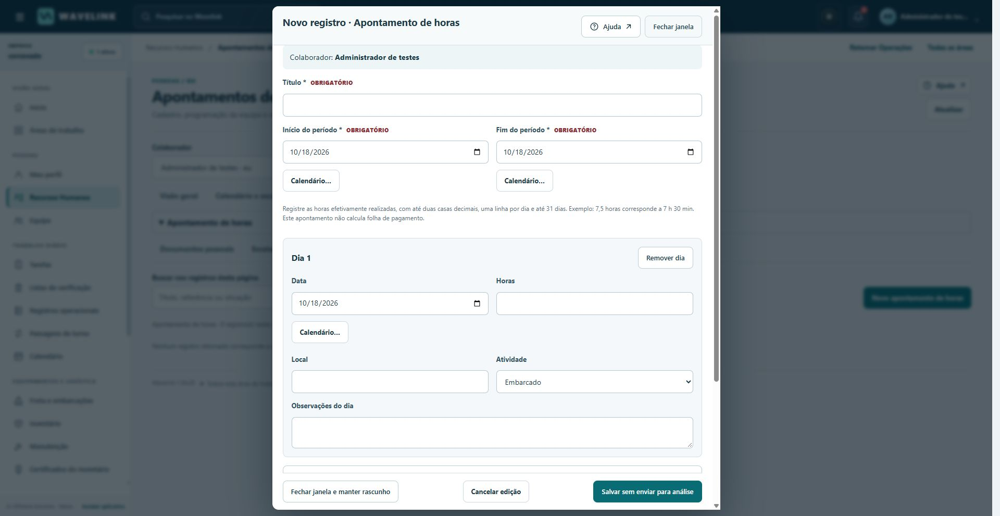
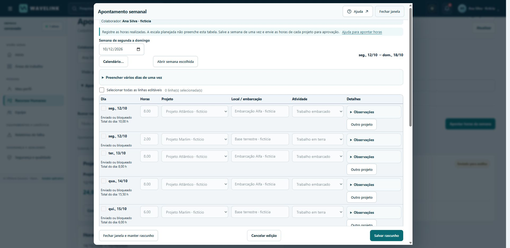
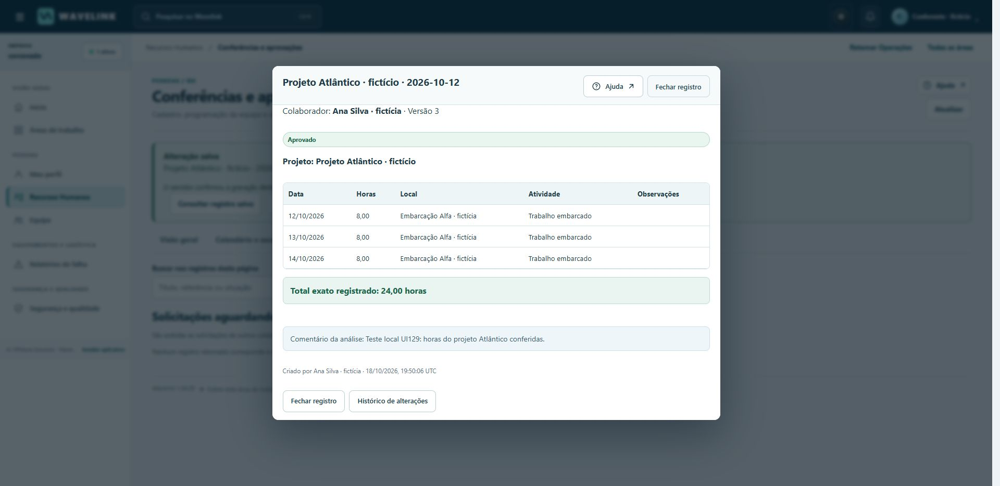
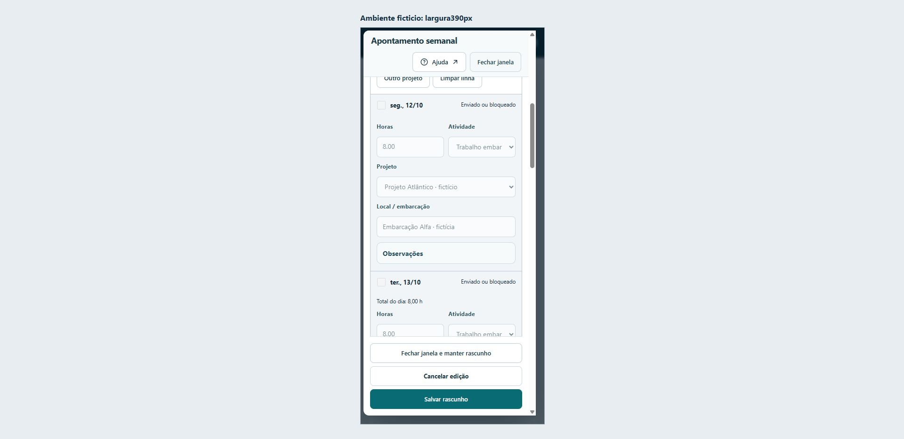
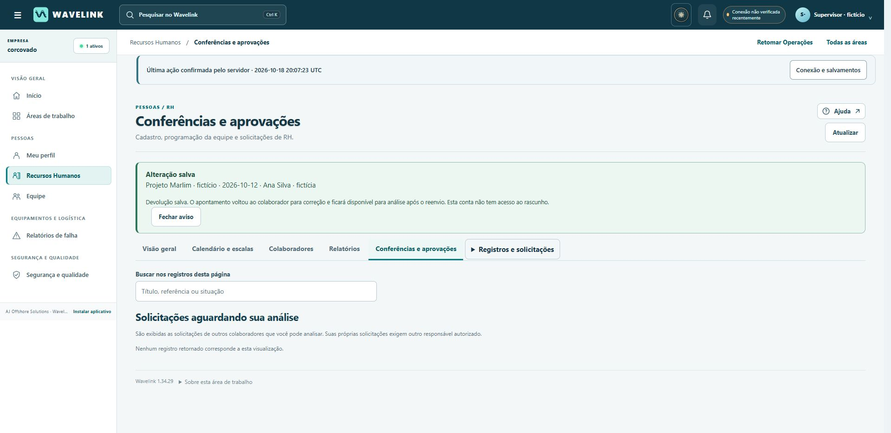

WAVELINK · AJ OFFSHORE SOLUTIONS · CORCOVADO
Apontamento semanal e aprovação por projeto
UI129 · versão 1.34.29 · 18 de outubro de 2026
Preparado, integrado e testado localmenteA publicação e a validação do deployment serão registradas pelo coordenador. Este guia não declara a versão publicada.
O que mudou
Uma semana de segunda a domingo reúne as horas efetivamente realizadas. É possível distribuir o mesmo dia entre projetos, preencher campos em conjunto e ajustar cada linha. A semana salva os projetos alterados em uma única operação; cada projeto segue sua própria aprovação.
Os registros antigos sem projeto continuam no fluxo anterior. Não há conversão automática, horas presumidas da escala, folha de pagamento ou pagamento automático.
Como registrar e acompanhar
- Abra Recursos Humanos → Horas e o apontamento semanal. Escolha a semana.
- Preencha projeto, atividade e horas dos dias trabalhados. O local é opcional. Use Outro projeto quando o mesmo dia tiver trabalhos em projetos distintos.
- Para repetir informações, selecione os dias e aplique somente os campos desejados. Revise cada linha antes de salvar.
- Confira os totais por dia e por projeto. 7,5 h significa sete horas e meia. O limite de 24 horas considera os outros projetos e os apontamentos antigos sobrepostos.
- Salve a semana. Os projetos não alterados permanecem intactos; se um dos projetos alterados falhar na validação, nenhum deles é gravado parcialmente.
- Envie as horas de cada projeto para análise. Salvar o rascunho não envia o registro nem aprova horas.
- Se houver devolução, leia a justificativa, ajuste o projeto devolvido e reenvie. Outro projeto já aprovado permanece bloqueado e preservado.
Ao trocar de semana ou fechar com mudanças pendentes, confirme o descarte ou continue editando. Uma resposta incerta deve ser repetida com a mesma referência da ação para evitar gravações duplicadas.
Projetos e responsáveis pela aprovação
Somente o administrador cria e altera projetos, ativa ou desativa o cadastro e designa contas elegíveis. A designação não concede acesso geral ao RH.
Uma decisão de um responsável designado e independente é suficiente. Ninguém aprova, devolve ou rejeita o próprio apontamento. Revogar a designação ou desativar a conta/projeto altera imediatamente os acessos e as pendências. A fila abre diretamente a evidência autorizada.
Glossário adotado
Backup, compatibilidade e reversão
O coordenador verificou o backup pré-publicação em /var/data/wavelink-release-backups/20261018T195604Z-before-ui129, com integridade SQLite válida e nenhuma violação de chave estrangeira. O backup usa a API de cópia consistente do SQLite; os processos escritores não foram parados para essa cópia. Nenhuma restauração foi executada.
O primeiro cadastro válido de projeto ativa wavelink-hr-2. A mera abertura da tela mantém HR1. UI128 recusa HR2 para impedir que regras antigas ignorem os responsáveis designados.
Após ativar HR2, não fazer rollback isolado para UI128. Preferir correção adiante. Uma restauração do backup anterior precisa de decisão explícita, processos escritores efetivamente parados, verificação do backup e conciliação das alterações posteriores, pois uma restauração não as preserva automaticamente.
O backup completo e a transferência com RH preservam projetos, responsáveis, registros, auditoria e recibos. Transferências operacionais sem RH excluem esses dados privados. O banco ativo não é limpo nem substituído por este pacote.
Exemplos reais na base fictícia
Capturas do Chrome conectado durante a validação local. A imagem de celular usa a aplicação em uma área de 390 × 844 pixels; não representa teste em aparelho físico.
Antes: consulta de horas no fluxo anterior.
Depois: semana preenchida com dois projetos e edição por dia.
Aprovação do projeto autorizado, com evidência e total de horas.
Cartões e controles na largura de celular.
Após devolver: confirmação clara, sem oferecer ao aprovador um registro que voltou a ser privado do autor.
Registro das jornadas e limites observados
Validação e limites
As provas automatizadas usam companhias e contas fictícias. Incluem gravação atômica, concorrência, versões, repetição sem duplicação, permissões, revogação, privacidade do histórico, justificativas, backup e restauração. Passaram 51 testes Python focados, 49 suítes JavaScript e 109 verificações de sintaxe. O componente semanal passou 145 verificações. As execuções e a conferência no Chrome constam do registro de validação.
Preparação de código, reconstrução, testes locais, deployment ativo e comportamento observado em produção são etapas distintas. A produção permanece UI128. A branch de preparação está parcial e o pacote final ainda precisa ser enviado e publicado. A aprovação e devolução por projeto passaram no Chrome local. A última correção do filtro de aprovador passou no teste real de formulário, mas sua nova conferência visual ficou pendente: o controle do Chrome travou após um aviso nativo. Não foram construídos nem instalados executáveis Windows nesta fase; a imagem Docker não foi executada pelo agente de integração. A bateria histórica não é declarada integralmente verde.
O usuário temporário teste-rh-ui121-2 permanece. Não houve mensagens a terceiros nem importação de dados fictícios na Corcovado por esta preparação.
Fontes profissionais
Fontes consultadas em 18/10/2026 para terminologia e organização da interface; não estabelecem regras legais, de folha ou pagamento neste aplicativo.
Registro das decisões e glossário · Proveniência dos arquivos · Estado da entrega